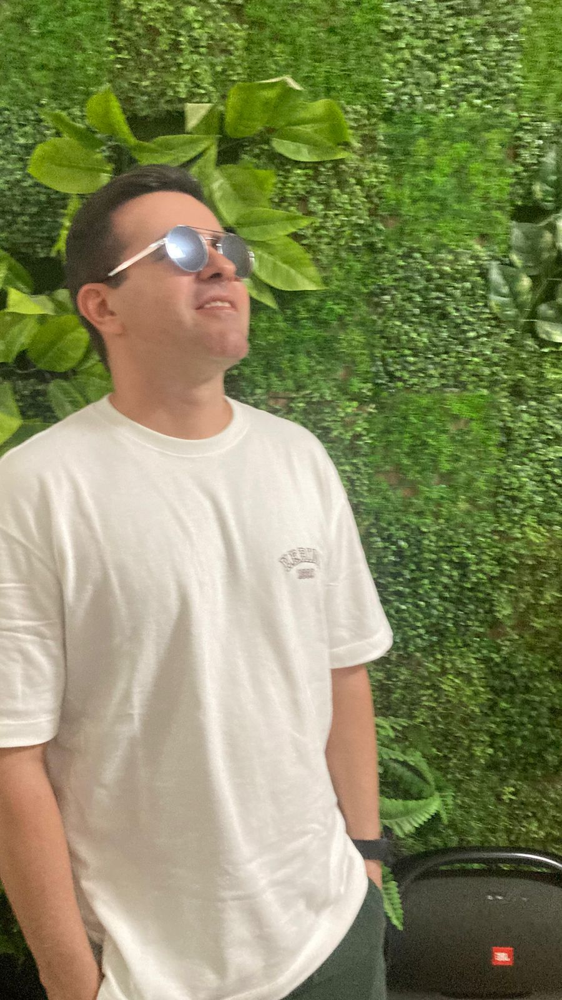

Sobre o Professor
Saulo é um educador entusiasta de Caicó-RN que em 2027 celebrará duas décadas de dedicação ao ensino. Sua trajetória é marcada pela união entre o movimento do corpo e a vanguarda tecnológica.
Minha História
Saulo Bulhões da Silva é professor de Educação Física da Rede Estadual de Ensino no Rio Grande do Norte. Sua jornada começou nas escolas privadas de Caicó, passando por instituições renomadas como o SESI, Santa Terezinha e CDS.
Convocado em concurso público em 2007 e novamente em 2020, Saulo nunca parou de se reinventar. Empreendeu com sua própria academia e até explorou o comércio de entretenimento com máquinas de colecionáveis.
Hoje, ele mergulha no mundo acadêmico e tecnológico: ele está cursando mestrado em Geografia (GEOPROF) na UFRN e cursa três pós-graduações focadas em Inteligência Artificial. Seu foco atual é o Vibe Coding e a programação, buscando soluções digitais que dialoguem com sua pesquisa acadêmica e prática educacional.
No lado pessoal, é um pai dedicado do Bernardo, Benício e Benjamim, e casado com a Alexandra.
Curiosidades & Paixões
Apaixonado por esportes: pratica musculação, corridas de rua e trilhas em meio à natureza.
Entusiasta de IA e Programação: estuda constantemente a aplicação de tecnologia na educação.
Trocou o vício em tênis pelo vício em aprender: cada impulso de compra vira um novo curso ou mentoria.
Orgulhosamente radicado em Caicó-RN, levando inovação para o interior do estado.